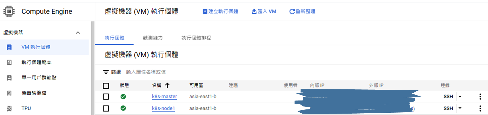

前言
Google Cloud Platform (GCP) 是由 Google 推出的雲端計算平台，提供各種雲端運算資源，包括虛擬機器、儲存等等。GCP 可以解決使用者本地電腦穩定性不足或是配備不夠的問題，使用者可以透過 GCP 創建屬於自己的虛擬機器，進而進行開發、分析資料或架設系統等等的工作。如果是新帳號使用者可以利用90天或300美金的體驗期來滿足自己短期的需求。
1. 準備
在 GCP 上建立虛擬機
- 進入到 GCP 網站 中開始使用，
- 啟用 Compute Engine 功能。
- 點選 VM 執行個體後建立執行個體，區域的部分就近選擇台灣即可
- 其餘我採用的配備是
- e2-medium (2 個 vCPU，4 GB 記憶體)
- Ubuntu 20.04 LTS (x86/64)
- 硬碟大小 50GB
- 這邊會需要配置兩台 VM 來充當 K8s 的 Master Node 和 Worker Node，配置完成後應該會可以看到跟下圖一樣的畫面
Kubernetes 安裝版本為 1.26.0-00

- 點選 SSH 就可以進入到 VM 的終端機操作畫面
到這邊在 GCP 上建立 VM 的內容就結束了，接下來就是如何將 Kubernetes 安裝在這兩台 VM 上面運行
2. Master & Worker node 設定
2.1 更新與安裝套件
1
2
3
|
sudo apt update -y
sudo apt upgrade -y
sudo apt install vim net-tools wget -y
|
2.2 Forwarding IPv4 and letting iptables see bridged traffic
1
2
3
4
5
6
7
8
9
10
11
12
13
14
15
16
17
|
cat <<EOF | sudo tee /etc/modules-load.d/k8s.conf
overlay
br_netfilter
EOF
sudo modprobe overlay
sudo modprobe br_netfilter
# sysctl params required by setup, params persist across reboots
cat <<EOF | sudo tee /etc/sysctl.d/k8s.conf
net.bridge.bridge-nf-call-iptables = 1
net.bridge.bridge-nf-call-ip6tables = 1
net.ipv4.ip_forward = 1
EOF
# Apply sysctl params without reboot
sudo sysctl --system
|
- 查看是否正常
1
2
|
lsmod | grep br_netfilter
lsmod | grep overlay
|
- 看剛剛設定的值是否都 =1，最後的結果應該會跟下圖一樣
1
|
sysctl net.bridge.bridge-nf-call-iptables net.bridge.bridge-nf-call-ip6tables net.ipv4.ip_forward
|

2.3 Containerd 安裝
這邊還是推薦安裝 containerd，不推薦安裝 Docker，因為 K8s 後面的版本已經捨棄了 Docker。如果一定要安裝 Docker 還會需要多安裝一個 cri-dockerd，會比較複雜
如果有舊版的再執行
移除舊版的 Docker、containerd
1
|
for pkg in docker.io docker-doc docker-compose podman-docker containerd runc; do sudo apt-get remove $pkg; done
|
- 安裝必要的套件
1
2
|
sudo apt-get update
sudo apt-get install ca-certificates curl gnupg
|
- 添加 Docker 的官方 GPG 密鑰
1
2
3
|
sudo install -m 0755 -d /etc/apt/keyrings
curl -fsSL https://download.docker.com/linux/ubuntu/gpg | sudo gpg --dearmor -o /etc/apt/keyrings/docker.gpg
sudo chmod a+r /etc/apt/keyrings/docker.gpg
|
- 使用以下命令設置存儲庫
1
2
3
4
|
echo \
"deb [arch="$(dpkg --print-architecture)" signed-by=/etc/apt/keyrings/docker.gpg] https://download.docker.com/linux/ubuntu \
"$(. /etc/os-release && echo "$VERSION_CODENAME")" stable" | \
sudo tee /etc/apt/sources.list.d/docker.list > /dev/null
|
- 安裝 containerd，這邊與官網的不一樣，這邊我們只需要安裝 containerd 就好，不需要安裝 Docker
1
2
|
sudo apt-get update
sudo apt-get install containerd.io
|
- 查看 containerd 安裝版本，如果正常安裝成功就會有下圖的樣子

- 產生 containerd 的
config.toml 檔案
1
2
3
4
5
6
|
# 先進入 root 模式
sudo su
sudo containerd config default > /etc/containerd/config.toml
# 離開 root 模式
exit
|
- 啟動 containerd 並查看狀態
1
2
3
|
sudo systemctl enable containerd
sudo systemctl restart containerd.service
sudo systemctl status containerd.service
|

3. 安裝 Kubeadm、Kubelet、kubectl
- 關閉 swap
- 安裝相關套件
1
2
|
sudo apt-get update
sudo apt-get install -y apt-transport-https ca-certificates curl
|
- Download the Google Cloud public signing key
1
|
curl -fsSL https://packages.cloud.google.com/apt/doc/apt-key.gpg | sudo gpg --dearmor -o /etc/apt/keyrings/kubernetes-archive-keyring.gpg
|
- Add the Kubernetes apt repository
1
|
echo "deb [signed-by=/etc/apt/keyrings/kubernetes-archive-keyring.gpg] https://apt.kubernetes.io/ kubernetes-xenial main" | sudo tee /etc/apt/sources.list.d/kubernetes.list
|
- 更新 apt repository
- 安裝 kubeadm & kubelet & kubectl
這邊有兩個選擇，一個是安裝最新版本，另一個是安裝指定版本。我這邊是安裝 1.26.0-00
安裝指定版本
- 查看可安裝版本
1
|
apt-cache madison kubeadm
|
- 安裝指定版本
1
2
3
4
5
|
K_VER="<version>"
# ex : K_VER="1.26.0-00"
sudo apt-get install -y kubelet=${K_VER} kubectl=${K_VER} kubeadm=${K_VER}
sudo apt-mark hold kubelet kubeadm kubectl
|
安裝最新版本
- 直接安裝就可以了
1
2
|
sudo apt-get install -y kubelet kubeadm kubectl
sudo apt-mark hold kubelet kubeadm kubectl
|
- 確認 kubeadm 安裝版本

Worker Node 只需要做到這一步就好，直接接後面的
第五章
啟動 kubelet 並查看狀態，此時沒有 running 是正常的
1
2
3
|
sudo systemctl enable kubelet
sudo systemctl restart kubelet
sudo systemctl status kubelet
|

- 拉取初始化需要的 image
1
|
sudo kubeadm config images pull
|
- kubernetes 初始化
指令中的 domain 可以由 Kubernetes 官網 獲得，根據自己安裝的 container runtime 來決定要使用哪個
要把最下面的 join... 記錄起來，之後 worker node 加入到 cluster 的時候會用到
1
|
sudo kubeadm init --pod-network-cidr=192.168.0.0/16 --cri-socket=unix:///var/run/containerd/containerd.sock
|

- 把剛剛第 10 步獲得的指令輸入
1
2
3
|
mkdir -p $HOME/.kube
sudo cp -i /etc/kubernetes/admin.conf $HOME/.kube/config
sudo chown $(id -u):$(id -g) $HOME/.kube/config
|
- 加入 path
1
2
3
4
5
6
7
|
# 進入 root mod
sudo su
echo 'export KUBECONFIG=/etc/kubernetes/admin.conf' >> ~/.bashrc
# 啟用
source ~/.bashrc
|
- 查看 cluster，此時都還是 root mod，後續使用到 k8s 指令的時候都要在 root 模式下使用
.png)
4. 佈署 Pod Network 插件
- 這邊我選擇 Calico，當然還有其他的可以選擇，例如 Flannel 插件。不同的插件在
kubeadm init ...時，--pod-network-cidr輸入的 IP 範圍會不太一樣，如果使用 Flannel，就會是--pod-network-cidr=10.244.0.0/16
1
2
3
|
kubectl create -f https://raw.githubusercontent.com/projectcalico/calico/v3.26.1/manifests/tigera-operator.yaml
kubectl create -f https://raw.githubusercontent.com/projectcalico/calico/v3.26.1/manifests/custom-resources.yaml
|
- 查看安裝情況

5. Worker node 加入 Cluster 中
Worker node 只需要做到第三章的第 8 步驟即可。接者，直接輸入剛剛從 Master 中獲得的join...指令

最後在 Master node 的 VM 再次查看 node 的情況就可以看到剛剛加入的 Worker node 就成功了
.png)
🔗參考
- Kubernetes 官網
- How to Install Kubernetes Cluster on Ubuntu 20.04 with kubeadm – Collabnix
- How to Deploy Kubernetes with Kubeadm and containerd - The New Stack
- Kubernetes手记（3）- 核心组件/附件_k8s_雪雷_InfoQ写作社区
- Install Kubernetes Cluster with kubeadm 2022 (Linux VM/Mac/Windows, x86/Arm) - YouTube